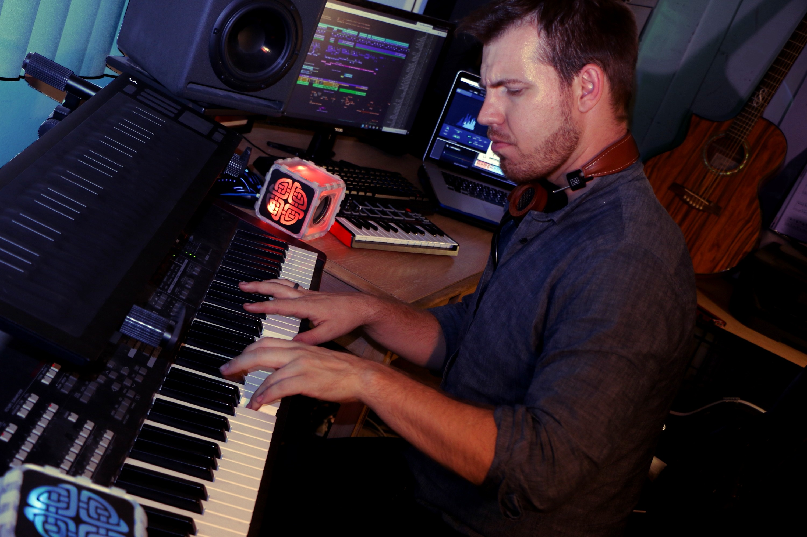

Thomas Ascough
Music Production, Sound Design, Audio Post
Composer and sound designer Thomas Ascough has over ten years of professional music experience. Having started his career as performer, Ascough transitioned into music for media in 2015. He has since scored several games and short films, including the award-winning documentary Blood for Blood, and regularly contributes to the Emmy Awarded Music Library, CrimeSonics. He specializes in dramatic and emotional music. From immersive soundscapes to pounding action cues Ascough combines orchestral, electronic, rock and a variety of world music elements to give each score a unique musical texture.
Thomas graduated as Salutatorian from Full Sail University’s Bachelors of Science: Music Production program, where he was awarded the Course Directors Award and inducted into the NSCS Honor Society. After moving to Los Angeles, he went on to study Ethnomusicology with Liberty University Online, specializing in traditional music and instruments of China. He currently is working towards a Masters of Fine Arts in Music Scoring and Composition for Film and Media at Academy of Art University
Julian Ranieri

Musician, Technician, Sound Designer
Julian is an Independent Musician and Audio Technician who studied audio recording at Diablo Valley College in Pleasant Hill, CA. He was previously an Audio-Lab Technician with Academy of Art University in San Francisco, CA where he would troubleshoot and assist faculty and students with their audio recording needs.
Julian has been performing and studying different instruments including: Drums, Guitar, Bass and Vocals, with various bands and individuals since the age of 9. Currently he is studying North Indian Classical Music on Sitar with student of Ali Akbar Khan, Tim White, in Berkeley, CA.
He is passionate about Mixing and Editing for any style of music and loves to record Voice-Actors and Foley as well as designing sound effects for games.